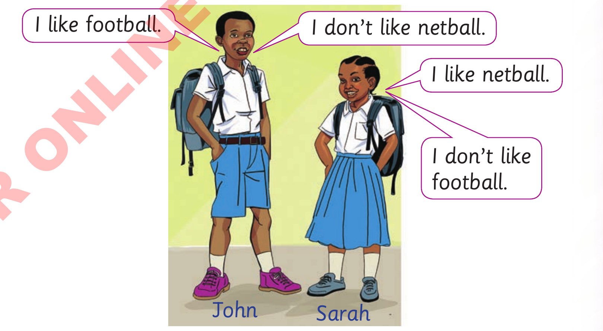

Activity 3: Listening and oral practice/ observing and signing practice
(a)
Use but to join sentences together.The first one has been done for
you.

(i)
I like football. I don’t like netball.
I like football, but I don’t like netball.